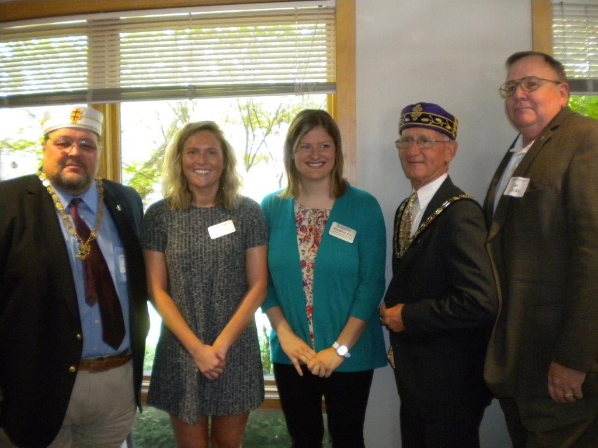
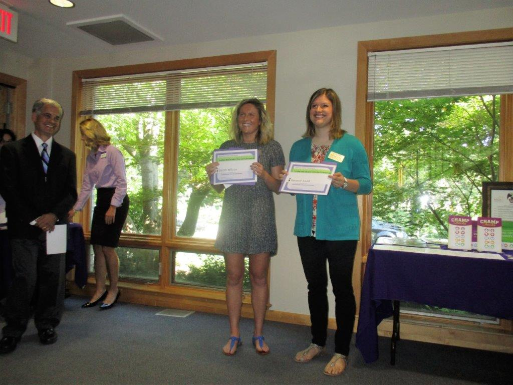
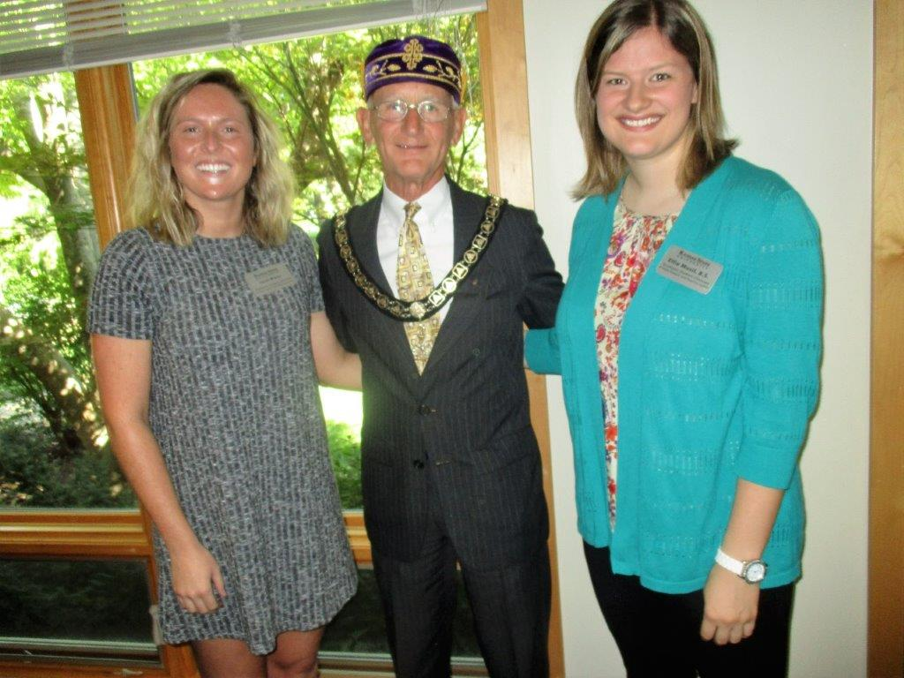
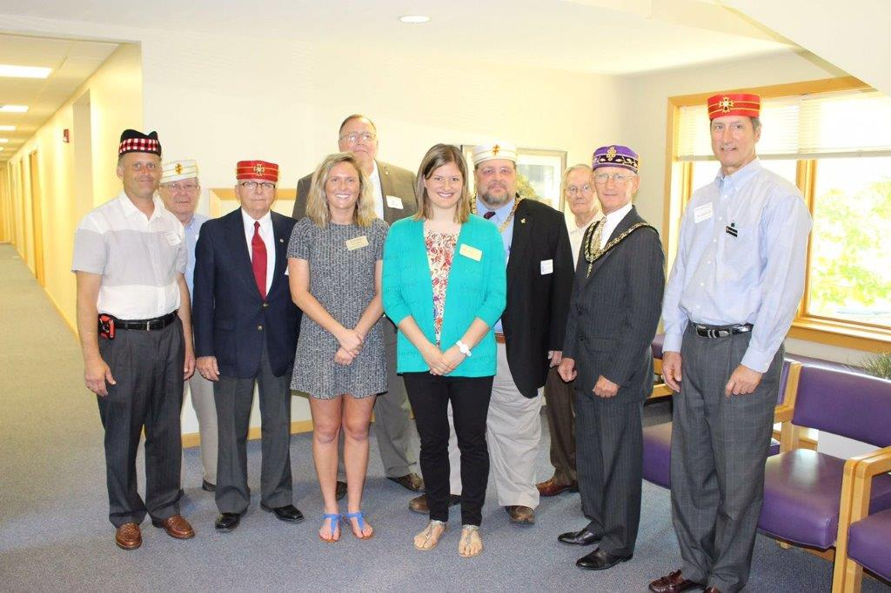

RiteCare® Results
RiteCare® Results
Rite Care Scholarships
On September 23, 2016 the Scottish Rite Orient of Kansas presented scholarships to two Kansas State University students,
Sarah Wilcox, Lenexa, Kansas and Ellie Musil, Blue Rapids, Kansas. They are studying Communication Sciences and Disorders
at Kansas State. The Program included remarks from Dr. Robert Garcia, Au.D., M.B.A., CSD Program Director Audiologist,
Melanie Hilgers, Clinic Director, Clinical Associate Professor, and Debra L. Burnett, Ph.D., CCC-SLP, Assistant Professor,
Program in Communication Sciences and Disorders.
Refreshments were served following the program.
Being a Scottish Rite Mason does make a difference.
Refreshments were served following the program.
Being a Scottish Rite Mason does make a difference.

John Reynolds 33 Degree Personal Representative to the SGIG of Kansas, Salina Valley, Scholarship recipients Sarah Wilcox and Ellie Musil, Hugh W. Gill III SGIG of Kansas, Don Jacka 33 Degree Personal Representative to the SGIG of Kansas, Topeka Valley
John Reynolds 33 Degree Personal Representative to the SGIG of Kansas, Salina Valley, Scholarship recipients Sarah Wilcox and Ellie Musil, Hugh W. Gill III SGIG of Kansas, Don Jacka 33 Degree Personal Representative to the SGIG of Kansas, Topeka Valley

Robert Garcia, Program Director, Melanie Hilger, Clinic Director and Scholarship recipients Sarah Wilcox and Ellie Musil
Robert Garcia, Program Director, Melanie Hilger, Clinic Director and Scholarship recipients Sarah Wilcox and Ellie Musil

Sarah Wilcox, Hugh W. Gill III SGIG of Kansas, Ellie Musil
Sarah Wilcox, Hugh W. Gill III SGIG of Kansas, Ellie Musil

Front Row: Don Moser 32 degree, James Winn KCCH, Sarah Wilcox, Ellie Musil, Hugh W. Gill III SGIG of Kansas, Rod Kalivoda KCCH Back Row: Rex Boatman 33 Degree, Don Jacka 33 Degree, John Reynolds 33 Degree, Dr. Don A. Mahrle 33 Degree
Front Row: Don Moser 32 degree, James Winn KCCH, Sarah Wilcox, Ellie Musil, Hugh W. Gill III SGIG of Kansas, Rod Kalivoda KCCH Back Row: Rex Boatman 33 Degree, Don Jacka 33 Degree, John Reynolds 33 Degree, Dr. Don A. Mahrle 33 Degree